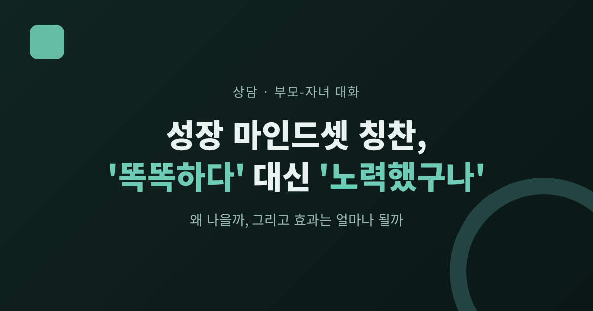
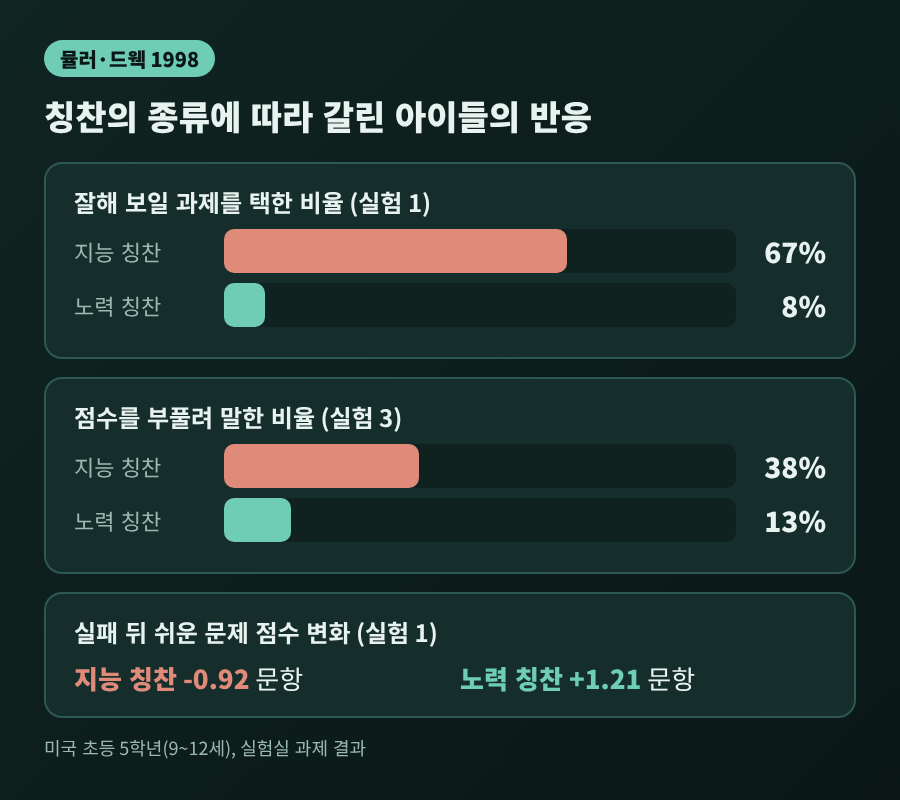
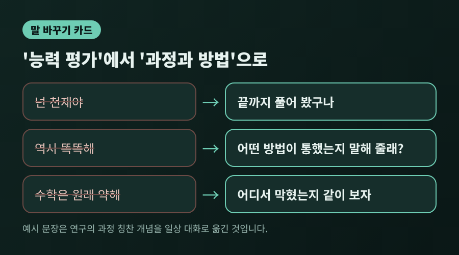
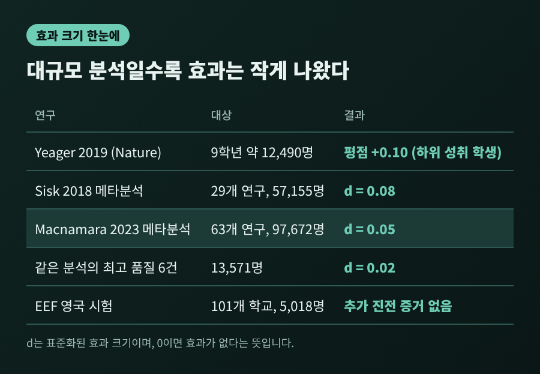
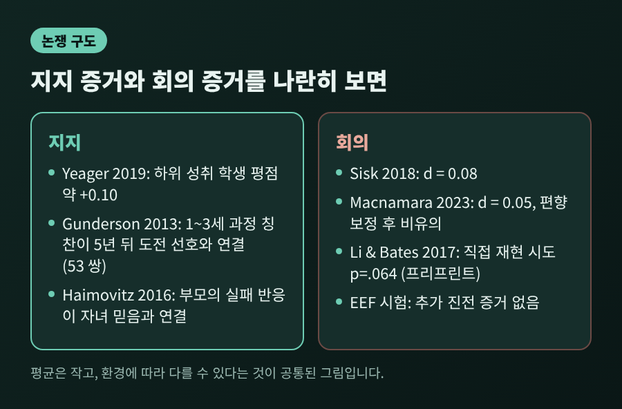
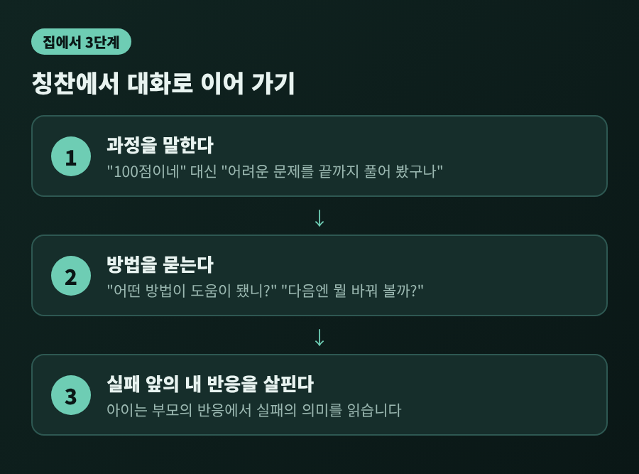

성장 마인드셋 칭찬, '똑똑하다' 대신 '노력했구나'가 나은 이유와 한계

오늘은 성장 마인드셋과 칭찬의 심리학에 대해 이야기해 보려 합니다. '똑똑하다'보다 '노력했구나'가 낫다는 주장은 1998년 실험에서 출발했고, 가정의 일상 대화로도 이어집니다. 다만 이후 연구에서 효과 크기가 작게 나오기도 해서, 어디까지 믿을 수 있는지 함께 짚어 보겠습니다.
■ 칭찬 한 마디가 아이의 선택을 바꾼 실험
성장 마인드셋은 심리학자 캐럴 드웩이 널리 알린 개념입니다. 지능을 타고난 고정 값으로 보는 믿음과, 노력과 방법으로 자랄 수 있다고 보는 믿음을 구분합니다.
이 구분을 칭찬에 적용한 대표 연구가 1998년 뮬러와 드웩의 실험입니다. 미국 초등 5학년 아이들(9~12세) 약 412명이 6개의 실험에 참여했습니다. 아이들은 퍼즐 문제 열 개를 쉽게 풀었고, 그 직후 두 가지 중 하나의 칭찬을 받았습니다.
- 지능 칭찬: "이 문제를 잘 푸는 걸 보니 똑똑하구나."
- 노력 칭찬: "열심히 했구나."
이어서 일부러 어려운 문제를 주었고, 아이들은 대부분 실패했습니다. 그 뒤의 반응이 달랐습니다.
첫 실험에서 다음 과제를 고르게 했더니, 지능 칭찬을 받은 아이의 67%가 '잘해 보일 수 있는' 쉬운 과제를 택했습니다. 노력 칭찬을 받은 아이는 8%만 그랬습니다. 실패 후 다시 쉬운 문제를 풀었을 때, 지능 칭찬 집단은 평균 0.92문항 줄었고 노력 칭찬 집단은 1.21문항 늘었습니다.

한 가지가 더 눈에 띕니다. 세 번째 실험에서는 아이들이 낯선 또래에게 자기 점수를 알려 주는 단계가 있었습니다. 지능 칭찬을 받은 아이의 38%가 점수를 실제보다 높게 말했고, 노력 칭찬 집단은 13%였습니다. '똑똑한 아이'라는 평가를 지켜야 한다는 부담이 정직함까지 흔들 수 있다는 해석이 가능합니다.
■ 가정에서의 칭찬은 어떻게 이어질까
실험실 결과를 일상으로 옮겨도 될까요. 2013년 군더슨 연구팀은 가정에서 답을 찾으려 했습니다. 53쌍의 부모와 아이를 1, 2, 3세 때 각각 집에서 촬영하고, 부모의 칭찬을 종류별로 나눴습니다.
- 과정 칭찬: 노력, 전략, 행동에 대한 말 ("끝까지 해 봤구나")
- 사람 칭찬: 고정된 특성에 대한 말 ("넌 똑똑해")
- 기타 칭찬: "잘했어" 같은 짧은 말
5년 뒤 아이들이 7~8세가 되었을 때, 어릴 적 과정 칭찬 비율이 높았던 아이는 도전 과제를 더 선호했습니다. 좌절을 이겨 낼 방법도 더 잘 떠올렸고, 지능은 노력으로 자랄 수 있다고 더 믿었습니다. 흥미로운 점은 칭찬의 총량은 결과와 관계가 없었다는 것입니다. 많이 칭찬했느냐보다 무엇을 칭찬했느냐가 중요했습니다.
아쉬운 점도 있습니다. 표본이 53쌍으로 작고 관찰 연구여서, 칭찬이 원인이라고 단정하기는 어렵습니다.
■ 아이가 더 민감하게 받아들이는 것은 부모의 실패 반응
2016년 하이모비츠와 드웩의 연구는 시선을 조금 돌립니다. 4~5학년 자녀와 부모 73쌍을 조사했더니, 부모의 지능관은 아이의 믿음과 관련이 없었습니다. 관련이 있었던 쪽은 '부모가 실패를 어떻게 보느냐'였습니다.
실패를 해로운 일로 보는 부모의 자녀가 지능을 고정된 것으로 보는 경향이 더 강했습니다. 아이들은 부모가 무엇을 믿는지는 잘 몰라도, 실패 앞에서 부모가 어떤 표정을 짓는지는 정확히 알아챘다는 설명입니다. 부모 100명 이상이 참여한 온라인 실험도 같은 방향이었습니다. 실패가 해롭다고 느끼도록 유도된 부모는 자녀의 낙제 점수 앞에서 능력부터 걱정하는 반응을 더 많이 보였습니다.
예를 들어 시험을 망치고 온 아이에게 "괜찮아, 너는 원래 수학이 약하잖아"라고 위로하는 장면을 떠올려 보시기 바랍니다. 따뜻한 말이지만, 아이에게는 '능력은 정해져 있다'는 메시지로 전해질 수 있습니다.

■ 효과 크기는 생각보다 작았다
여기서부터가 이 주제의 다른 절반입니다. 성장 마인드셋이 학업에 도움이 된다는 기대는 컸지만, 후속 연구는 더 조심스러운 그림을 보여 줍니다.
2018년 시스크 연구팀은 두 개의 메타분석을 발표했습니다. 129개 연구, 약 36만 6천 명을 합친 첫 분석에서 마인드셋과 학업 성취의 평균 상관은 r=.10이었습니다. 매우 약한 관계입니다. 마인드셋 교육 개입을 다룬 29개 연구, 약 5만 7천 명의 분석에서는 평균 효과 크기가 d=0.08이었습니다. 저소득층 학생에서는 d=0.34로 더 컸지만, 근거가 된 효과 크기가 7개뿐이어서 신중하게 읽어야 한다고 저자들은 말합니다.
2023년 맥나마라와 버고인은 63개 연구, 약 9만 8천 명을 다시 분석했습니다. 전체 효과는 d=0.05였고, 출판 편향을 보정하면 통계적으로 유의하지 않았습니다. 마인드셋이 실제로 바뀐 연구 13건은 d=0.04, 질적으로 가장 우수한 6건은 d=0.02로 모두 유의하지 않았습니다. 프로그램에 금전적 이해관계가 있는 저자의 발표 논문은 d=0.18이었는데, 같은 저자의 미발표 연구는 d=0.02였다는 점도 지적했습니다.

옹호하는 쪽의 근거도 있습니다. 2019년 예이거 연구팀은 미국 고등학교 65곳, 9학년 약 1만 2,490명을 무작위로 나눠 25분짜리 온라인 수업을 두 번 진행했습니다. 성적이 낮은 학생의 핵심 과목 평점이 약 0.10점 올랐고, 또래 문화가 도전을 지지하는 학교에서 효과가 더 컸습니다.
그러나 영국에서 학생 5,018명, 101개 학교가 참여한 대규모 시험에서는 성적 향상의 증거가 없었습니다. 평가 기관은 단독으로 성적을 올리는 방법으로 쓰는 데 신중해야 한다고 밝혔습니다. 정리하면 '평균적으로는 작고, 특정 환경에서만 의미가 있을 수 있다'는 것이 지금까지의 공통된 그림입니다.
■ 칭찬 실험 자체도 그대로 재현되지는 않았다
효과 크기 논쟁과는 별개로, 칭찬 실험의 재현 문제도 있습니다. 2017년 리와 베이츠는 10~12세 아동 624명을 대상으로 세 개의 실험을 했습니다. 심사를 거치기 전의 프리프린트 단계 자료입니다. 지능 칭찬이 수행에 미치는 영향은 뚜렷하게 나타나지 않았고, 아이 본인의 마인드셋도 지능검사나 성적과 관련이 없었습니다.
이 연구의 첫 실험은 중국 하얼빈의 초등학생 190명으로 뮬러와 드웩 실험을 직접 재현하려 한 것이었습니다. 성적 차이는 p=.064로 관례적인 기준에서 유의하지 않았고, 끈기와 즐거움 같은 항목도 차이가 없었습니다. 원 연구에서 나온 차이는 약 1.3 표준편차였다고 합니다.
물론 이것이 '칭찬은 아무 영향이 없다'는 결론은 아닙니다. 문화와 연령, 과제가 다르고, 한 번의 재현 실패로 원 연구가 틀렸다고 말하기도 어렵습니다. 다만 1998년의 극적인 수치를 그대로 기대하기에는 근거가 충분하지 않다는 정도로 받아들이는 편이 정직합니다.

■ 그래서 집에서는 어떻게 말하면 좋을까
드웩 본인도 오해를 경계합니다. 2015년 칼럼에서 그는 성장 마인드셋이 단순한 노력 칭찬이 아니라고 밝혔습니다. 배우지 못하고 있는 아이에게 "최선을 다했구나"만 건네는 것은 순간의 기분만 좋게 할 수 있다는 것입니다. 노력은 학습을 위한 수단이어서, 무엇을 해 봤는지, 다음에는 무엇을 시도해 볼지 묻는 편이 낫다고 권합니다. 말은 성장형이지만 행동은 그렇지 않은 '거짓 성장 마인드셋'도 경고했습니다.
연구 결과를 가정에 옮긴다면 이 정도가 현실적일 듯합니다.
- 결과보다 과정을 말합니다. "100점이네"보다 "어려운 문제를 끝까지 풀어 봤구나."
- 노력 뒤에 방법을 묻습니다. "어떤 방법이 도움이 됐니?", "다음엔 뭘 바꿔 볼까?"
- 실패 앞의 내 표정을 점검합니다. 아이는 부모의 반응에서 실패의 의미를 읽습니다.

이 세 가지는 연구가 보여 준 작은 효과를 과장하지 않으면서도, 해가 될 가능성은 낮은 방향입니다. 1998년의 첫 실험은 큰 차이를 보고했습니다. 후속 연구는 작은 차이를 보고합니다. 그래서 '아이를 바꾸는 비법'보다 '작지만 해롭지 않은 습관'으로 받아들이는 쪽이 더 정확합니다.
끝으로 한 마디만 더 드리겠습니다. 칭찬의 문장을 완벽하게 고르는 일보다, 아이가 어려운 문제 앞에서 부모의 표정을 살피지 않아도 되는 분위기가 더 오래 남을 것입니다.
"무엇을 말했느냐만큼, 실패를 어떻게 대했느냐가 아이에게 남습니다."
내일 아이가 서툰 결과를 가져온다면, 점수보다 먼저 "어디가 제일 어려웠니?"라고 물어보시겠습니까.
※ 이 글은 연구 결과를 소개하는 일반 정보이며, 개별 아이의 진단이나 치료를 대신하지 않습니다. 아이가 실패를 지나치게 두려워하거나 학업 스트레스가 오래 이어진다면 학교 상담교사나 아동·청소년 전문 상담 기관과 상의해 보시길 권합니다.